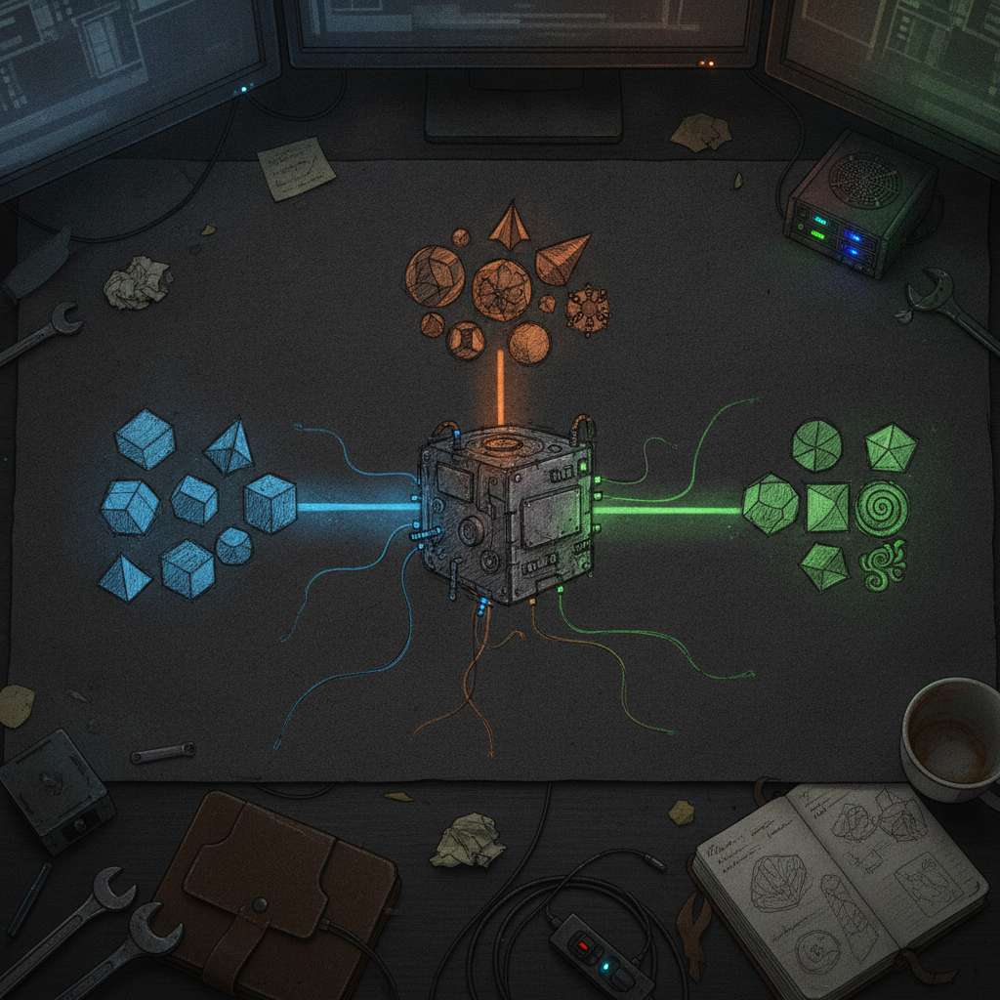

Misfitz Stuffs the Slot Machine With More Chia NFT Jackpots
I keep an eye on how Chia NFT projects try to keep things interesting after the mint is over, because that is usually where projects either fade out or find their second wind. A post from @ChiaMisFitz caught my attention for exactly that reason.
What was bookmarked
@ChiaMisFitz posted that they just added 50 more NFTs into their Misfitz slot machine mechanic. The bonus jackpots now pull from a mix of Chia collections, including Chia Friends, Chia Phunks, and Honkers, alongside the existing Misfitz pool. The post frames it simply: same spin mechanic, more prizes waiting inside it. No external links were included in the post itself.
I do not have details on the exact odds, entry cost, or how the slot mechanic is built under the hood, so I am covering this as what it is on the surface: an expansion of an existing engagement feature, not a technical breakdown.

Why it matters
Chia NFT projects live and die on whether holders stick around after the initial hype of a mint. A slot machine style feature is a simple way to give people a reason to keep checking back in, and pulling jackpot prizes from other established Chia collections is a nice touch. It turns one project's engagement mechanic into a small cross-community event, which is the kind of thing that benefits everyone involved, not just the project running it.
It also says something about where the smaller, older Chia NFT collections stand. Chia Friends, Chia Phunks, and Honkers are not new names in this space, and having pieces from those collections show up as jackpot prizes in someone else's game is a quiet vote of confidence in them still holding value and interest.
The practical breakdown
What it does: Adds 50 new NFTs into an existing slot machine style reward mechanic, with some of those prizes coming from other Chia collections rather than just Misfitz's own supply.
Who it helps: Misfitz holders get more reasons to engage, and the featured collections (Chia Friends, Chia Phunks, Honkers) get extra visibility in front of an audience that may not already hold them.
What problem it solves: Post-mint engagement is one of the hardest things for any NFT project to sustain. Recurring mechanics like this give people something to do besides just holding and waiting.
What still needs work: The post does not explain the mechanics, odds, or cost to spin, so it is hard to say how sustainable or fair the system is from the outside. That is normal for a promotional post, but worth knowing before treating it as more than an announcement.
What I would test first: If I were curious, I would want to see the actual spin interface and a breakdown of how jackpot odds are set before forming an opinion on the mechanic itself.
Rick's take
I like seeing Chia projects cross-pollinate like this. Pulling jackpot prizes from Chia Friends, Chia Phunks, and Honkers instead of just recycling their own supply is a small gesture, but it is the kind of thing that builds goodwill across the ecosystem instead of everyone staying in their own lane. It tells me @ChiaMisFitz is thinking about the community as a whole, not just their own holder base.
The one thing I would want to understand better is how the odds and mechanics actually work before I would call this a great deal for anyone spinning. That is not a knock on the project, just a normal thing to check with any prize based mechanic.
What to watch next
I will be curious whether more Chia collections get pulled into the jackpot pool over time, and whether this kind of cross-collection mechanic becomes more common in the space. If it works well for Misfitz, do not be surprised to see other Chia NFT projects try something similar.
Source and links
Source: X post by @ChiaMisFitz URL: https://x.com/i/web/status/2077237693671739428 Retrieved on 2026-07-15 External references: none included in the source post.